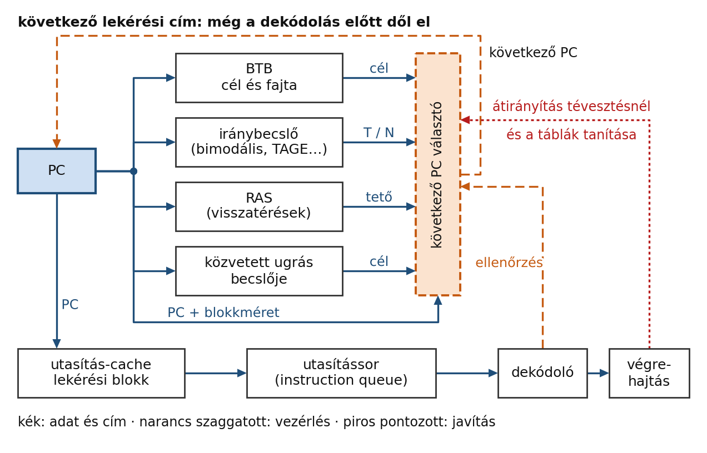

Az eddigi becslők arra feleltek, hogy egy feltételes ugrás ugrik-e. A lekérésnek azonban az is kell, hová. Vegyünk egy kis rekurzív függvényt, amelyet ötvenszer hívunk meg hatos mélységgel, és futtassuk a Pipeline-szimulátor és mélyebb futószalagok alfejezet szimulátorán. Ha a front-end semmit nem tud a célcímekről, a CPI 1,44: minden hívás és visszatérés két ciklust veszít. Egy kis céltábla ezt 1,09-re csökkenti, egy nyolc bejegyzéses visszatérésicím-verem pedig 1,03-ra. Egy kétbejegyzéses verem viszont rosszabb, mint ha nem lenne verem: 1,17. Hogy miért, az ennek az alfejezetnek a témája.
Képzeljünk el egy postást, aki a levelet még fel sem bontotta, de már indulnia kell a következő címre. A lekérő egység ugyanígy: a PC ismeretében, dekódolás előtt kell megmondania a következő lekérési címet. Még azt sem tudja, hogy az utasítás ugrás-e. Ehhez a múltból jegyzeteket vezet:
ret
célját ismeri, mert a hívásoknál feljegyezte, hova kell
visszatérni;
A diagramon figyeld meg, hogy a felső ág hurok: egy ciklus alatt a PC-ből új PC lesz, és közben semmit nem tudunk az utasítás tartalmáról. A javítás később érkezik: a dekódoló észreveszi, ha a BTB tévedett az utasítás fajtájában, a végrehajtás pedig, ha az irány vagy a cél volt rossz.
Definíció. Az elágazáscél-puffer (branch target buffer, BTB) a PC-vel indexelt, címkézett kis gyorsítótár, amely korábban ugró vezérlésátadások célját és fajtáját (feltételes, feltétlen, hívás, visszatérés) tárolja.
halmaz és utas (way) szervezésnél a PC/4 alsó bitje a halmaz indexe, a felette lévő bitek a címke:
A halmazon belül a legrégebben használt bejegyzés esik ki. (A címkét sok tervben rövidítik; ennek biztonsági ára van, lásd alább.) A működés:
A BTB-hiba és az iránytévesztés ára különböző. Egy jal
célja a dekódolás végén kiszámítható az utasításszóból, tehát a javítás
korai és olcsóbb; a rossz irány csak a végrehajtáskor derül ki, és a
drágább, teljes büntetést fizeti (a pontos ciklusszámok gyártmányfüggők,
ellenőrizendő: [S-AGNER]).
A ret célja nem állandó: ugyanaz a függvény sok helyről
hívható, ezért a BTB utoljára látott célja gyakran téves. A hívások és
visszatérések azonban verem szerint párosulnak, éppen
mint a programverem a Hívási konvenció, verem és
veremkeret alfejezetben.
Definíció. A visszatérésicím-verem (return address stack, RAS) a processzor kis, rögzített mélységű verme: hívásnál a PC + 4 kerül rá (push), visszatérésnél a tetejét jósolja és eltávolítja (pop).
RISC-V-ben a hardver a regiszterhasználatból ismeri fel a fajtát:
jal vagy jalr, amelynek célregisztere
ra (x1) vagy t0
(x5), hívás; a jalr x0, 0(ra) visszatérés; ezt
a specifikáció mint a verembecslőknek szóló jelzést rögzíti
[S-RISCV-ISA].
Három nehézség:
RAS.snapshot() és
restore() teszi ezt.A közvetett ugrás (indirect jump) célja regiszterben
van: virtuális függvény hívása C++-ban, függvénymutató, egy nagy
switch ugrótáblája. A BTB az utoljára látott célt jósolja,
ami addig jó, amíg a cél nem változik. Ha a célok váltakoznak (például
egy vegyes típusú objektumtömb bejárásakor), a BTB szinte mindig téved.
A közvetett célbecslő (indirect target predictor) a
PC-t az utolsó néhány céltól függő útvonal-előzménnyel
XOR-olva indexel egy céltáblát, mint a gshare az irányoknál; így a
periodikus célsorozatot megtanulja. A mai magok ennél bonyolultabb,
címkézett változatokat használnak (ITTAGE-szerűek, ellenőrizendő a
gyártóknál).
A mai magok ciklusonként több utasítást kérnek le: a lekérési blokk egy igazított, néhányszor tíz bájtos szelet (a méret gyártmányfüggő, ellenőrizendő: [S-AGNER]). Ebből következik:
Továbbvitt eredmény. A célbecslés modellje: a
PC-címkézett BTB (cél és fajta), a rögzített mélységű
RAS (hívásnál push, ret-nél pop,
túlcsordulásnál a legrégebbi cím vész el), valamint a kettőt az
iránybecslővel összekapcsoló FrontEnd az
archkit.bpred-ben. Ezt használja az Egy modern mag anatómiája és a Spectre és Meltdown alfejezet.
Továbbvitt eredmény. A front-end felépítése: a PC-ből párhuzamosan kérdezett BTB, iránybecslő, RAS és közvetett becslő adja a következő lekérési címet; a lekérési blokk utasítássoron át jut a dekódolóhoz, a tévesztés a végrehajtásból irányítja át. Erre épül az Egy modern mag anatómiája és A top-down elemzési módszer.
A becslőtáblák végesek és megosztottak: ugyanazt a bejegyzést más kódrészlet, adott esetben más biztonsági környezet is elérheti, ha az index és a (rövidített) címke egyezik. Amit az egyik tanít, azt a másik látja: ez teszi lehetővé, hogy egy támadó befolyásolja egy másik kód spekulatív útját. A mechanizmust kizárólag modellen, a Spectre és Meltdown alfejezet vizsgálja a védekezésekkel együtt.
16 halmazos, egyutas BTB, három ugrás: 0x1000,
0x1040, 0x1024.
| PC | PC/4 | index | címke |
|---|---|---|---|
0x1000 |
0x400 |
0 | 0x40 |
0x1040 |
0x410 |
0 | 0x41 |
0x1024 |
0x409 |
9 | 0x40 |
Az első kettő ugyanabba a halmazba esik, egyutas táblában kiszorítják egymást. Ha váltakozva futnak, mindkettő mindig hibázik.
main → f1 → f2 → f3, a hívások címe 0x1000,
0x1100, 0x1200, a RAS mélysége 2.
| esemény | RAS utána (alul → tető) | jóslat | valódi cél |
|---|---|---|---|
hívás 0x1000 |
1004 | ||
hívás 0x1100 |
1004, 1104 | ||
hívás 0x1200 |
1104, 1204 (1004 elveszett) | ||
ret f3-ban |
1104 | 1204 ✓ | 0x1204 |
ret f2-ben |
üres | 1104 ✓ | 0x1104 |
ret f1-ben |
üres | nincs | 0x1004 × |
Három visszatérésből egy téved: a lánc legkülső címe. Általában: mély láncon bejegyzéses verem visszatérést veszít el.
A rekurzív programban 3603 utasításból 350 hívás és 350 visszatérés. Céljóslat nélkül mindegyik 2 ciklust veszít: ciklus, azaz . A kód alább azt mutatja, hogy az ideális célbecslés ezt teljesen megspórolja, sőt az elágazás-veszteség is 198-ról 104 ciklusra csökken, mert céljóslat nélkül a helyesen jósolt ugró elágazás sem tud átirányítani.
Először a RAS mélysége rekurzión és hívási láncon. A nyomot a
recursion_trace (egy rekurzív függvény, minden visszatérési
cím ugyanaz) és a chain_trace (különböző függvények) adja;
a BTB elég nagy, hogy ne ütközzön.
import sys; sys.path.insert(0, "code")
from archkit import bpred as B
print("RAS rekurzió (8 mély, 10-szer) lánc (8 mély, 10-szer)")
for depth in (2, 4, 8):
row = []
for tr in (B.recursion_trace(8, 10), B.chain_trace(8, 10)):
for fallback in (False, True):
fe = B.FrontEnd(B.Bimodal(), B.BTB(1024), B.RAS(depth), btb_fallback=fallback)
r = fe.run(tr)
row.append(r.causes["ras"])
print(f"{depth:3d} tartalék nélkül {row[0]:3d}, tartalékkal {row[1]:3d} "
f"nélkül {row[2]:3d}, tartalékkal {row[3]:3d}")RAS rekurzió (8 mély, 10-szer) lánc (8 mély, 10-szer)
2 tartalék nélkül 60, tartalékkal 10 nélkül 54, tartalékkal 0
4 tartalék nélkül 40, tartalékkal 10 nélkül 36, tartalékkal 0
8 tartalék nélkül 0, tartalékkal 0 nélkül 0, tartalékkal 0(A hideg BTB tévesztéseit itt nem számoljuk.) Rekurziónál a tartalék
sokat segít, mert a BTB utolsó célja szinte mindig a helyes; különböző
függvények láncán viszont a BTB célja az előző körből való, és az ott
éppen ugyanaz, ezért a tartalék az egész sorozaton jó. Ez a
chain_trace mesterséges tulajdonsága: ha minden körben más
helyről hívnánk, a tartalék nem segítene.
Most a közvetett ugrás: egy switch három ágra,
periodikus, illetve véletlen választóval.
from archkit.cache import XorShift32
rng = XorShift32(2)
choices = {"periodikus 0,1,2": [0, 1, 2] * 100,
"véletlen": [rng.randrange(3) for _ in range(300)],
"90% 0-s": [0 if rng.randrange(10) < 9 else 1 for _ in range(300)]}
for name, ch in choices.items():
t = B.indirect_trace(ch)
only = B.FrontEnd(B.Bimodal(), B.BTB(64)).run(t).mispredicts
ind = B.FrontEnd(B.Bimodal(), B.BTB(64), indirect=B.IndirectPredictor(6, 6)).run(t)
print(f"{name:17s} csak BTB {only:3d}/300 közvetett becslővel {ind.mispredicts:3d}/300")periodikus 0,1,2 csak BTB 300/300 közvetett becslővel 6/300
véletlen csak BTB 201/300 közvetett becslővel 186/300
90% 0-s csak BTB 54/300 közvetett becslővel 59/300A periodikus sorozatot az útvonal-előzmény szinte hibátlanul jósolja. Véletlen választónál semmi sem segít ( körüli tévesztés), torz eloszlásnál pedig az előzmény inkább zaj, a „legutóbbi cél” kicsit jobb.
A bevezető mérése: a saját RISC-V programunk nyomát a
futószalag-modell kapja, a céljóslatot pedig a target_hit
horgon keresztül a FrontEnd adja. A horog megmondja egy
ugrásról, hogy a front-end a lekéréskor ismerte-e a célt.
from archkit import riscv, trace, pipeline
SRC = """
main:
li s1, 50
outer:
li a0, 6
call rsum
addi s1, s1, -1
bnez s1, outer
li a7, 10
ecall
rsum: # a0 + rsum(a0 - 1)
beqz a0, done
addi sp, sp, -8
sw ra, 4(sp)
sw a0, 0(sp)
addi a0, a0, -1
call rsum
lw t0, 0(sp)
lw ra, 4(sp)
addi sp, sp, 8
add a0, a0, t0
done:
ret
"""
tr = riscv.run(SRC).trace
def target_hook(ras):
fe = B.FrontEnd(B.Bimodal(), B.BTB(64), ras)
log = fe.run(trace.branch_trace(tr), log=True).log
ctrl = [i for i in tr if i.is_control]
known = {id(i): e["btb_hit"] if i.kind == "br" else e["correct"]
for i, e in zip(ctrl, log)}
return lambda ins: known[id(ins)]
configs = {"nincs céljóslat": lambda ins: False, "csak BTB": target_hook(None),
"BTB + RAS(2)": target_hook(B.RAS(2)), "BTB + RAS(8)": target_hook(B.RAS(8)),
"ideális célok": lambda ins: True}
print(f"utasítás: {len(tr)}, hívás: {trace.mix(tr)['call']}, ret: {trace.mix(tr)['ret']}")
for name, hook in configs.items():
r = pipeline.simulate(tr, predictor=B.Bimodal(), target_hit=hook)
print(f"{name:16s} CPI {r.cpi:.3f} elveszett: elágazás {r.stalls['elágazás']:4d}, "
f"ugrás {r.stalls['ugrás']:4d}")utasítás: 3603, hívás: 350, ret: 350
nincs céljóslat CPI 1.445 elveszett: elágazás 198, ugrás 1400
csak BTB CPI 1.087 elveszett: elágazás 104, ugrás 204
BTB + RAS(2) CPI 1.170 elveszett: elágazás 104, ugrás 506
BTB + RAS(8) CPI 1.032 elveszett: elágazás 104, ugrás 6
ideális célok CPI 1.030 elveszett: elágazás 104, ugrás 0A „csak BTB” a visszatérések nagy részét eltalálja, mert egy rekurzióban a visszatérési cím sokszor ismétlődik. A kicsi, tartalék nélküli RAS(2) minden mélyebb visszatérésnél „nincs jóslat”-ot mond, ezért rosszabb a verem nélküli esetnél. A RAS(8) befogadja a hét mély láncot, és gyakorlatilag az ideálissal egyezik. A fennmaradó elágazás-veszteség az iránybecslésé.
R zöld. Mi a
legkisebb elég mélység 7 mély láncon?main-be visszatérő marad hibás.
Miért éppen az?call és a
ret nem párban áll (például jmp-pel
„visszatérés”, vagy a veremcím átírása), a RAS elcsúszik.
Javítás: hívást hívással, visszatérést visszatéréssel,
a hardver által felismert regiszterekkel.causes), és külön büntetéssel.jal célja az utasításszóban
benne van?1. (A) 64 halmazos, kétutas BTB-ben melyik halmazba
esik a 0x2004, a 0x2104, a 0x2204
és a 0x2108 című ugrás, és mi a címkéjük? Mi történik, ha
az első hármat körbe futtatjuk?
2. (A) Öt mély hívási láncot
(main → f1 → … → f5) egyszer hajtunk végre, a RAS mélysége
3. Írd le a verem tartalmát az ötödik hívás után, és mondd meg, mely
visszatérések tévesztenek (tartalék nélkül).
3. (B) A Kód rész táblázatából: hány
ciklust nyer a BTB + RAS(8) a céljóslat nélküli esethez képest, és
mekkora gyorsulás ez? Mekkora lenne a nyereség mélyebb futószalagon,
ahol egy tévesztett ugrás 10 ciklus (a darabszámok változatlanok)?
4. (B) 32 feltétlen ugrást futtatunk körbe,
egymástól 16 bájtra (0x1000, 0x1010, …). Miért
100% a tévesztés egy 64 bejegyzéses egyutas és egy 64 bejegyzéses
négyutas BTB-ben is? Mi segít?
5. (C, programozós) A rekurzív programon mérd a
CPI-t RAS(N) függvényében,
.
Mi a legkisebb elég mélység, és miért éppen annyi?
6. (C, programozós) Írj „hiszterézises” céltáblát: egy bejegyzés célja csak akkor cserélődik, ha egymás után kétszer más célt lát. Hasonlítsd össze a „legutóbbi cél” stratégiával a periodikus és a torz sorozaton, és magyarázd az eredményt.
A front-end dekódolás előtt, csak a PC-ből választ következő címet. A BTB PC-címkézett gyorsítótár célcímekkel és fajtákkal; BTB-hiba ugrásnál tévesztés, találatnál feltételes ugrásnál az iránybecslő dönt. A RAS a hívások visszatérési címeit veremben tartja; túlcsordulásnál a legrégebbi vész el, tévesztés után a tetejét vissza kell állítani. A közvetett ugrások célját útvonal-előzménnyel jósolják. A lekérési blokk utasítássoron át jut a dekódolóhoz. A rekurzív mintaprogram CPI-ja céljóslat nélkül 1,44, csak BTB-vel 1,09, RAS(8)-cal 1,03; a tartalék nélküli RAS(2)-vel 1,17. A megosztott táblák biztonsági felületet nyitnak.
ret-nél RAS
nélkül.1. feladat. PC/4: 0x801,
0x841, 0x881, 0x842; halmaz (mod
64): 1, 1, 1, 2; címke (/64): 32, 33, 34, 33. Az első három ugyanabba a
kétutas halmazba esik, körbefuttatva mindig a legrégebben használtat
szorítják ki, tehát mindhárom mindig hibázik; a negyedik zavartalan.
b = B.BTB(128, ways=2)
for pc in (0x2004, 0x2104, 0x2204, 0x2108):
print(f"0x{pc:04X}: (halmaz, címke) = {b.index_tag(pc)}")
r = B.FrontEnd(B.Bimodal(), b).run(
[B.Branch(pc, True, pc + 64, "jal") for pc in (0x2004, 0x2104, 0x2204)] * 10)
print("tévesztés:", r.mispredicts, "/", r.transfers)0x2004: (halmaz, címke) = (1, 32)
0x2104: (halmaz, címke) = (1, 33)
0x2204: (halmaz, címke) = (1, 34)
0x2108: (halmaz, címke) = (2, 33)
tévesztés: 30 / 302. feladat. A hívások a 0x1004,
0x1104, 0x1204, 0x1304,
0x1404 címeket tették le; a három mélységű veremben
0x1204 0x1304 0x1404 marad. Az első három visszatérés
talál, a negyedik és ötödik (f2 → f1, f1 → main) téved:
.
3. feladat. Az ugrás-veszteség különbsége ciklus, az elágazás-veszteségé : együtt 1488 ciklus. A CPI 1,445-ről 1,032-re csökken, a gyorsulás . 10 ciklusos büntetésnél a céljóslat nélküli ugrás-veszteség , RAS(8)-cal a 6 veszteségciklusnak megfelelő 3 tévesztés ciklus: kb. 6970 ciklus nyereség, ami . Mélyebb futószalagon a céljóslat tehát még fontosabb.
4. feladat. A 16 bájtos lépés PC/4-ben 4-es lépés, ezért az index alsó két bitje állandó. Egyutas, 64 halmazos tábla csak 16 halmazt használ: 32 ugrás, halmazonként kettő, körbefutva mindig kiszorítják egymást. Négyutas, 16 halmazos tábla csak 4 halmazt használ, azaz 16 bejegyzést 32 ugrásra: LRU mellett a körkörös hozzáférés mindig hibázik. Segít a nagyobb tábla (256 bejegyzés), a sűrűbb elhelyezés, vagy hasító indexfüggvény.
for spacing, entries, ways in ((16, 64, 1), (16, 64, 4), (16, 256, 1), (4, 64, 1)):
t = [B.Branch(0x1000 + spacing * i, True, 0x8000, "jal") for i in range(32)] * 20
r = B.FrontEnd(B.Bimodal(), B.BTB(entries, ways)).run(t)
print(f"lépés {spacing:2d} B, {entries:3d} bejegyzés, {ways} út: {r.miss_rate:.0%}")lépés 16 B, 64 bejegyzés, 1 út: 100%
lépés 16 B, 64 bejegyzés, 4 út: 100%
lépés 16 B, 256 bejegyzés, 1 út: 5%
lépés 4 B, 64 bejegyzés, 1 út: 5%5. feladat.
for n in (1, 2, 4, 6, 7, 8, 10):
r = pipeline.simulate(tr, predictor=B.Bimodal(), target_hit=target_hook(B.RAS(n)))
print(f"RAS({n:2d}): CPI {r.cpi:.3f}")RAS( 1): CPI 1.198
RAS( 2): CPI 1.170
RAS( 4): CPI 1.115
RAS( 6): CPI 1.059
RAS( 7): CPI 1.032
RAS( 8): CPI 1.032
RAS(10): CPI 1.032A leghosszabb lánc main → rsum(6) → … → rsum(0): hét
egymásba ágyazott hívás. Hét bejegyzéstől a görbe nem javul tovább;
kevesebbnél minden hiányzó szint egy-egy tévesztett visszatérés
körönként.
6. feladat.
def run_targets(ch, hysteresis):
table, miss = {}, 0
for b in B.indirect_trace(ch):
target, wrong = table.get(b.pc, (None, 0))
miss += target != b.target
if target == b.target:
table[b.pc] = (target, 0)
elif target is None or not hysteresis or wrong == 1:
table[b.pc] = (b.target, 0)
else:
table[b.pc] = (target, 1)
return miss
for name in ("periodikus 0,1,2", "90% 0-s"):
ch = choices[name]
print(f"{name:17s} legutóbbi cél {run_targets(ch, False):3d} "
f"hiszterézis {run_targets(ch, True):3d}")periodikus 0,1,2 legutóbbi cél 300 hiszterézis 300
90% 0-s legutóbbi cél 54 hiszterézis 41Torz sorozaton a hiszterézis egyetlen kivétel után megtartja a gyakori célt, így 54-ről 41-re csökkenti a hibát (a „legutóbbi cél” minden magányos kivételnél kétszer hibázik, mint az egybites iránybecslő). A periodikus sorozaton egyik stratégia sem működik, ahhoz előzmény kell.